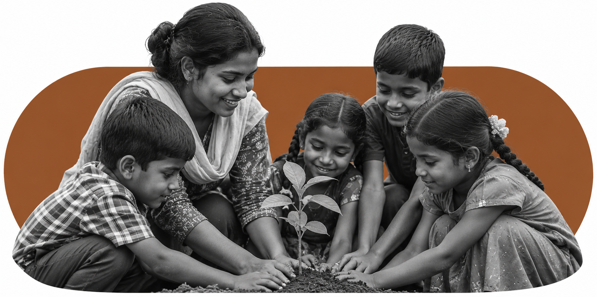
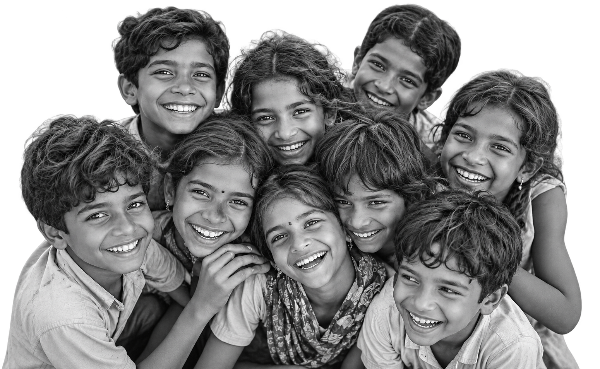
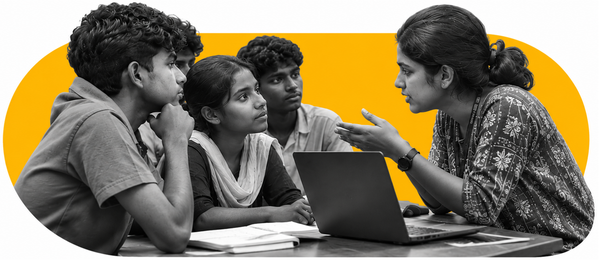
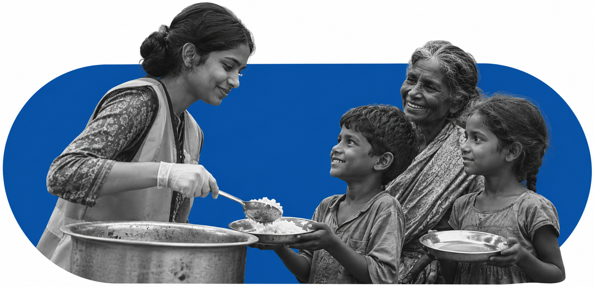

01ENVIRONMENT
Seeds of Hope
Restoring native biodiversity through community tree plantations, lake-front conservation drives, and sapling care pledges across neighborhoods.
Learn more →We bring people together to nurture native greenery, guide youth toward confident careers, and share meals with dignity across Avadi and beyond.


01ENVIRONMENT
Restoring native biodiversity through community tree plantations, lake-front conservation drives, and sapling care pledges across neighborhoods.
Learn more →
02EDUCATION & YOUTH
Empowering first-generation learners and youth with 1-on-1 counseling, higher education path mapping, and practical career navigation tools.
Learn more →
03FOOD & DIGNITY
Combating hunger by serving fresh, wholesome, and nutritious meals with unconditional dignity to daily-wage workers, the elderly, and families in need.
Learn more →"It was 6 AM. The air smelled of damp earth and possibility."
On a cool September morning, sixty volunteers — students, homemakers, retired teachers and working professionals — gathered at the Avadi Ring Road stretch with saplings, spades and an unshakeable belief that small hands can build a greener world.
Organised under Jeevan Foundation's Seeds of Hope initiative, the drive planted 240 native saplings along a 1.4 km stretch that had been exposed to dust and heat for years. Local municipality partnered with logistics, while our volunteers handled every bit of digging, watering and labelling by hand.